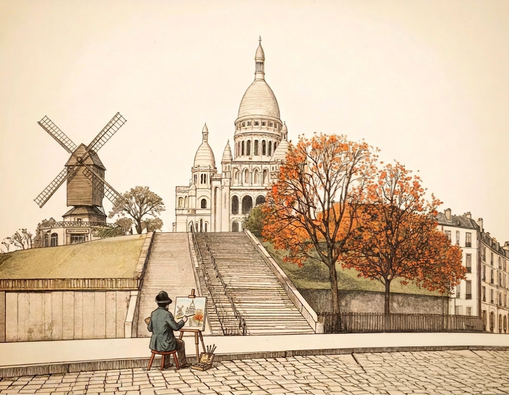

The hour Montmartre belongs only to the painters
Before the tour buses arrive, the square has a different rhythm entirely — here’s how to catch it.
Camille Roussel·7 min read
Discover Montmartre through the eyes of those who call it home. Beyond the postcard views, find the quiet corners, the neighborhood bistros, the stories written into its cobblestones.
We’ve spent years walking these streets, talking to locals, and documenting what makes this hilltop neighborhood feel alive. This is Montmartre the way we know it—unfiltered, authentic, and endlessly surprising.

Before the tour buses arrive, the square has a different rhythm entirely — here’s how to catch it.
{{ s.text }}
{{ f.a }}
“Montmartre doesn’t reveal itself from a viewpoint. It reveals itself on foot, slowly, to the people willing to get a little lost.”